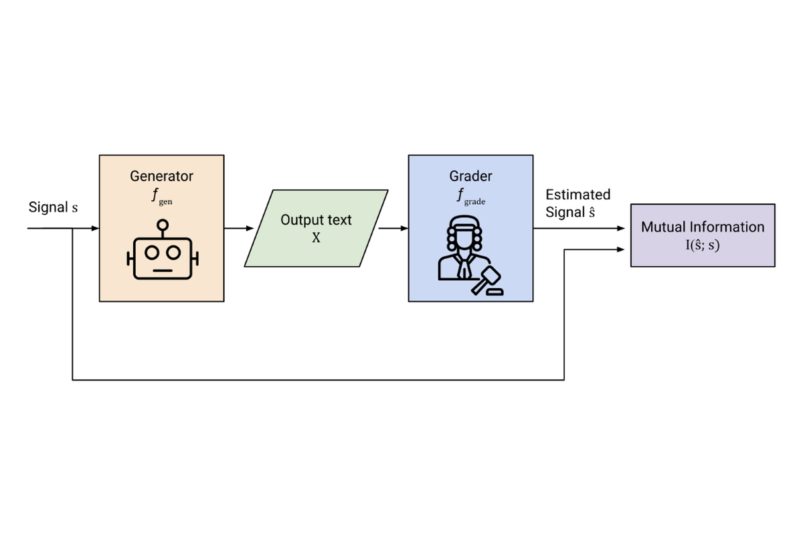

ExpressivityBench: Can LLMs Communicate Implicitly?

Summary
ExpressivityBench measures how well large language models convey information implicitly, modelling generation as an information-theoretic channel between a generator and a grader across nine tasks spanning emotion, tone, age, gender, and political slant. We find model strengths are uneven and strongly task-dependent, with affective content handled far better than sociolinguistic signals.
BibTeX
@inproceedings{tint2026expressivitybench,
title={{ExpressivityBench}: Can {LLMs} Communicate Implicitly?},
author={Tint, Joshua and Sagar, Som and Taparia, Aditya and Raines, Kelly and Pathiraja, Bimsara and Liu, Caleb and Senanayake, Ransalu},
booktitle={Findings of the Association for Computational Linguistics: EACL 2026},
pages={4500--4515},
year={2026},
doi={10.18653/v1/2026.findings-eacl.235},
publisher={Association for Computational Linguistics},
address={Rabat, Morocco},
url={https://aclanthology.org/2026.findings-eacl.235/}
}